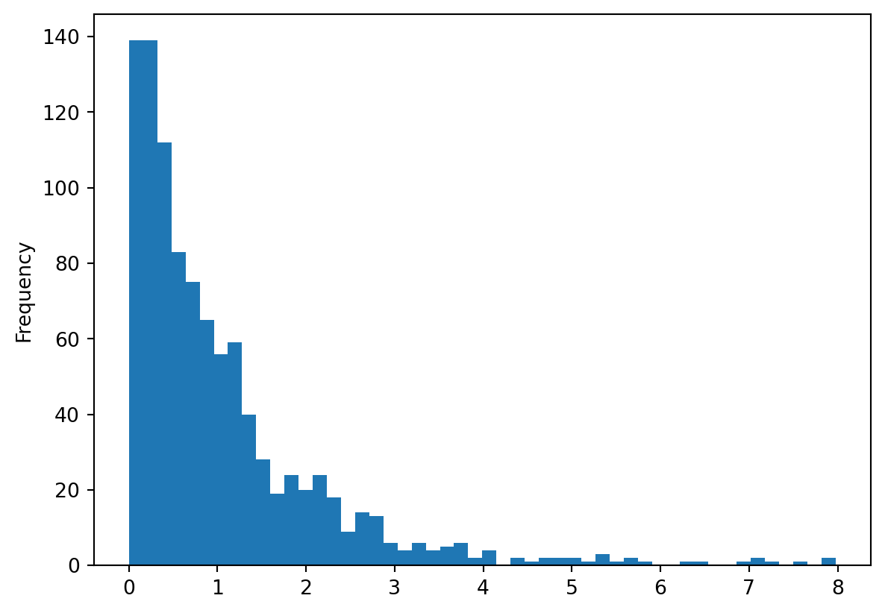
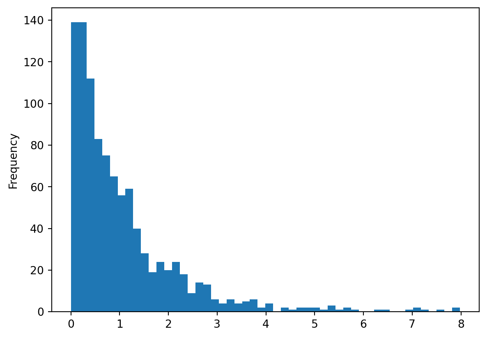
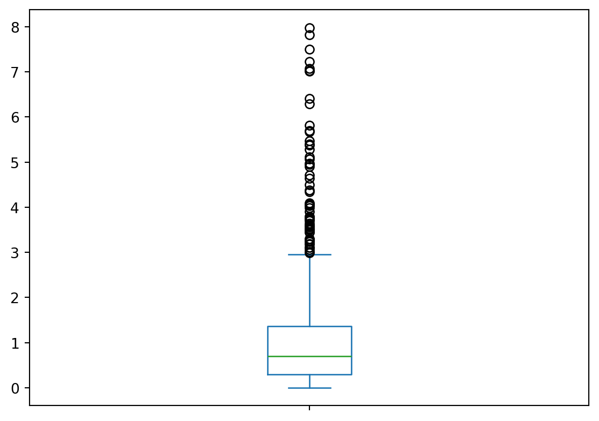
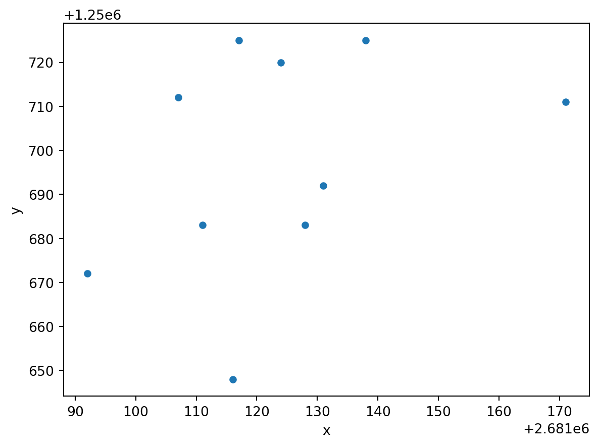

import random
import pandas as pd
random_gamma = [random.gammavariate(1, 1) for x in range(1000)]
random_gamma = pd.Series(random_gamma)
random_gamma.plot(kind = "hist", bins = 50)<Axes: ylabel='Frequency'>
Es ist äusserst Zentral, Daten regelmässig und oft zu visualisieren. Die de facto standart Library hierfür in Python ist matplotlib. Diese Library kann man direkt ansteuern wie in diesem Tutorial beschrieben wird. Wir verwenden die library jedoch etwas anders: Dabei nutzen wir die Tatsache aus, dass sowohl pandas wie auch geopandas eingebaute Methoden (methods) haben um deren Inhalte zu visualisieren. Die Methode heisst in beiden Fällen .plot(), wie wir weiter unten noch sehen werden.
Listpandas vereinfacht das Visualisieren von Daten sogar soweit, dass es sich jewils lohnt seine Listen, Dictionaries usw. zuerst in eine Series oder DataFrame zu überführen um sie zu visualisieren (wie ich zum Beispiel in Kapitel 28 jeweils gemacht habe).
import random
import pandas as pd
random_gamma = [random.gammavariate(1, 1) for x in range(1000)]
random_gamma = pd.Series(random_gamma)
random_gamma.plot(kind = "hist", bins = 50)<Axes: ylabel='Frequency'>
Weitere Beispiele zu Histogrammen aus Listen findet ihr im Kapitel Kapitel 28 .
ListDas Visualisieren als Boxplot ist sehr ähnlich, man ersetzt "hist" lediglich durch "box. Eine komplette liste der möglichen Argumente für findet ihr hier: https://pandas.pydata.org/pandas-docs/stable/reference/api/pandas.Series.plot.html
random_gamma.plot(kind = "box")<Axes: >
Um einen Scatterplot zu erstellen, braucht es eine DataFrame (eine Series reicht hierfür nicht aus).
zeckenstiche = pd.read_csv("data/zeckenstiche.csv")zeckenstiche.plot("x", "y", kind = "scatter")<Axes: xlabel='x', ylabel='y'>
Um aus GeoDataFrames Karten zu machen verwendet man ebenfalls die .plot() Methode. Um wirklich schöne Karten mit Python herzustellen braucht man viel Übung. Für eine schnelle Visualisierung reicht aber die .plot() Methode.
import geopandas as gpd
zeckenstiche = gpd.read_file("data/zeckenstiche.gpkg")
wald = gpd.read_file("data/wald.gpkg")ModuleNotFoundError: No module named 'geopandas'Einfache Plots ohne anpassung:
wald.plot()NameError: name 'wald' is not definedAnpassung der Plot Grösse:
wald.plot(figsize = (5,5))NameError: name 'wald' is not definedChoroplethenkarte Karte
from matplotlib.colors import ListedColormap
my_cmap = ListedColormap(["green","lightgrey"])
wald.plot(column = "Wald_text", legend = True, cmap = my_cmap)NameError: name 'wald' is not definedMehrere Layers:
base = wald.plot(column = "Wald_text", legend = True, cmap = my_cmap)
zeckenstiche.plot(color = "Red", ax = base)NameError: name 'wald' is not definedWeitere Informationen dazu findet ihr hier: https://geopandas.org/docs/user_guide/interactive_mapping.html
Vollautomatisch, ohne Anpassungen:
zeckenstiche.explore()Zeckenstiche Rot eingefärbt:
zeckenstiche.explore(color = "red")Zeckenstiche nach "accuracy" eingefärbt:
zeckenstiche.explore(column = "accuracy")Wald nach "Wald_text" eingefärbt (beachte, dass ich my_cmap weiter oben erstellt habe!):
wald.explore(column = "Wald_text", cmap = my_cmap)Zwei übereinander gelagerte Layers:
base = wald.explore(column = "Wald_text", cmap = my_cmap)
zeckenstiche.explore(m = base, color = "red")NameError: name 'wald' is not definedIn folgenden Beispielen zeigen wir noch ein paar einfache Wege, wie ihr die Zeckenstichdaten visualisieren könnt.
import pandas as pd
import geopandas as gpd
import matplotlib.pyplot as plt
import descartes
wald = gpd.read_file("data/wald.gpkg")
zeckenstiche_full = pd.read_csv("data/zeckenstiche_full.csv")
geom = gpd.points_from_xy(zeckenstiche_full['x'], zeckenstiche_full['y'])
zeckenstiche_gpd = gpd.GeoDataFrame(
zeckenstiche_full,
geometry=geom,
crs = 2056)ModuleNotFoundError: No module named 'geopandas'Mit der Erweiterung seaborn lassen sich mit wenigen Zeilen Code eine Kernel Density rechnen und visualisieren. Siehe nachstehenden Code:
import seaborn as sns
f, ax = plt.subplots(1, figsize=(6, 6))
wald.boundary.plot(linewidth=0.1, ax=ax)
zeckenstiche_gpd.plot(color='red', linewidth=0.1, ax=ax)
sns.kdeplot(x = zeckenstiche_full.x, y= zeckenstiche_full.y,shade = False,n_levels = 10, cmap = "viridis", ax = ax)
ax.set_axis_off()
plt.show()ModuleNotFoundError: No module named 'seaborn'Mit der Erweiterung contextily kann man sehr schnell und einfach Hintergrundkarten in den Plot einbinden. Dafür muss das GeoDataFrame vorher aber in WGS84 Koordinaten (EPSG 3857) konvertiert werden (mit to_crs, s.u.).
import contextily as ctx
f, ax = plt.subplots(1, figsize=(6, 6))
zeckenstiche_gpd.to_crs(epsg = 3857).plot(ax = ax)
ctx.add_basemap(ax)
ax.set_axis_off()
plt.show()ModuleNotFoundError: No module named 'contextily'Kernel Denisty und Hintergrundkarte können auch kombiniert werden:
lat = zeckenstiche_gpd.to_crs(epsg = 3857).geometry.x
lng = zeckenstiche_gpd.to_crs(epsg = 3857).geometry.y
f, ax = plt.subplots(1, figsize=(6, 6))
sns.kdeplot(x = lat,y = lng,shade = False,n_levels = 25, cmap = "viridis", ax = ax)
ctx.add_basemap(ax)
ax.set_axis_off()
plt.show()NameError: name 'zeckenstiche_gpd' is not defined